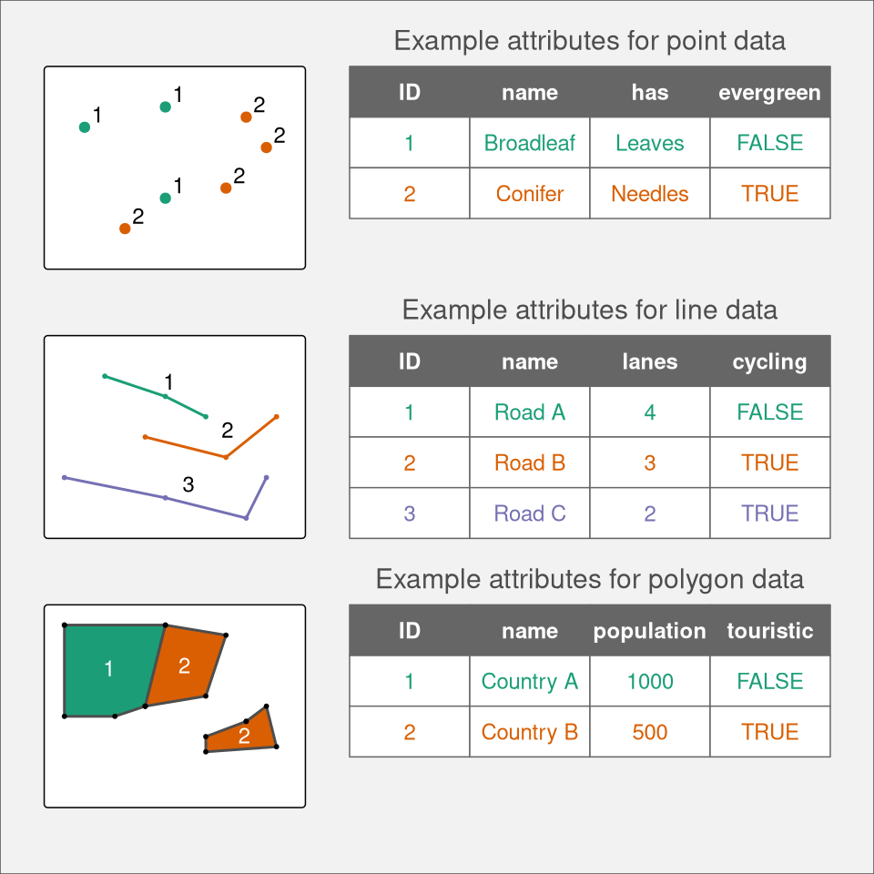
2 Spatial data in R
2.1 Introduction
Vector and raster data models are two basic models used to represent spatial data. These spatial data models are closely related to map making, with each model having its own pros and cons. This chapter stars by describing several popular spatial data models (Section 2.2). Each data model is introduced, explained how it is built, and how it is stored using different file formats. Next, this chapter presents how these different data models are implemented in R (Section 2.3). It includes showing how to read different spatial data formats, how to understand spatial R objects, and where to find more information about preprocessing spatial data. Finally, it focuses on the map projections (?sec-crs). This section gives a background on why do we need map projections and how to translate spatial data from an ellipsoid into a flat surface or computer screen. It also explains basic terms and gives an overview of map projections.
2.2 Data models
Traditionally, spatial data is described by two basic data models: vector data model aimed at (Section 2.2.1) representing the world using points, lines, and polygons, and raster data model focused on representing surfaces (Section 2.2.2). Additionally, now we have an abundance of available spatial data and a variety of ways to obtain it. It includes having many district variables and repeated measurements for the same area. Therefore, we also present the concept of spatial data cubes (Section 2.2.3).
2.2.1 Vector data model
The vector data model represent the world as a set of spatial geometries with non-spatial attributes (Figure 2.1). The role of geometry is to describe the location and shape of spatial objects. Attributes, on the other hand, are used to store the properties of the data.
There are three basic types of geometries: points, lines, and polygons, all of them are made up of coordinates (left part of Figure 2.1). A point is represented by a pair of coordinates, usually described as X and Y, allowing for locating this point in some space. X and Y could be unitless, in degrees, or in some measure units, such as meters (extended discussion on coordinates and related topics is in section ?sec-crs). Points can represent features on different spatial scales, from a GPS position, location of a bench in a park, to a city on a small scale map. They are also used to express abstract features, such as locations of map labels. Properties of points can be expressed on maps by different point sizes, colors, or shapes. A line extends the idea of a point. It consists of several points with coordinates (called vertices) that are arranged in some order. Consecutive points are connected by straight lines. Therefore, a straight spatial line consists of two points (two pairs of coordinates), while complex spatial lines could be created based on a large number of points. It gives the illusion that the line is curved. Lines are used to representing linear features, such as roads, rivers, boundaries, footpaths, etc. In this case, we can express line features’ attributes using either lines’ color or their widths. A polygon is again a set of ordered points (vertices) connected by straight lines. Its only difference from the line is that the first and the last point in a polygon has the same coordinates, and thus close the object. The polygon representation is used to represent shapes and locations of different objects, from a lake or a patch of vegetation, through a building or a city block, to some administrative units. Polygons also have one unique feature - they could have holes. A polygon hole represents an area inside of the polygon but does not belong to it. For example, a lake with an island can be depicted as a polygon with a hole. The values of polygons’ attributes can be represented by the areas (fill) colors.
The second part of the vector data model relates to non-spatial attributes (right part of Figure 2.1). Attributes are usually stored as a table, in which each column depicts some property, such as an identification number, a name of a feature, or a value of some characteristic. Each row, on the other hand, relates to a single spatial geometry.
The above ideas could be implemented in many ways. Currently, the Simple Feature Access seems to be the most widely used standard. In it, a feature is every object or concept that have spatial location or extent.
Simple feature standard makes a clear distinction between single- and multi-element features. We can have a POINT feature and a MULTIPOINT feature, and similarly LINESTRING and MULTILINESTRING, and POLYGON and MULTIPOLYGON. The main difference between single element features (such as POINT or POLYGON) and multi-element features (such as MULTIPOINT or MULTIPOLYGON) can be clearly seen by looking at attribute tables. For example, six points stored as POINT features fill six separate rows, while six points stored as just one MULTIPOINT feature occupy just one row. Examples of single- and multi-element features can be seen in Figure 2.1. The top example shows point data represented as MULTIPOINT feature: although we have seven points (seven distinct pairs of coordinates), they are gathered into two groups, green and orange, which can be seen in the associated attribute table. The central example, on the other hand, uses single-element features, where each line geometry relates to one row in the attribute table. Finally, the bottom example again uses multi-element features, where the second feature (Country B) consist of two separate geometries. The simple feature standard also describes a number of additional geometry types, including Curve, Surface, or Triangle. Finally, GeometryCollection exists that contains all of the possible geometry types.
A couple hundreds of file formats exist to store spatial vector data. One of the simplest ways to store spatial data is in the form of a text file (.csv) or as a spreadsheet (.xls or .xlsx). While it makes storing point data simple, with two columns representing coordinates, it is not easy to store more complex objects in this way. Text files are also not suitable for storing information about the coordinate reference system used (?sec-crs). Historically, the shapefile format (.shp) developed by the ESRI company gained a lot of interest and become the most widely supported spatial vector file format. Despite its popularity, this format has a number of shortcomings, including the need to store several files, attribute names limited to ten characters, the ability to store up to 255 attributes and files up to 2GB, and many more. A fairly recent file format, OGC GeoPackage (.gpkg), was developed as an alternative. It is a single file database free from the limitation of the shapefile format. Other popular spatial vector file formats include GeoJSON (.geojson), GPX (.gpx), and KML (.kml).
2.2.2 Raster data model
The raster data model represents the world using a continuous grid of cells, where each cell has a single associated value (Figure 2.2). Depending on the type of values, we can distinguish continuous and categorical rasters. In continuous rasters, such as elevation or precipitation, values vary progressively. Categorical rasters, on the other hand, uses integer values to represent classes. Their examples include land cover or soil types maps. Raster data can also contain cells for which we do not know the value (Figure 2.2). For example, data for this part of the area was not collected, or these locations are outside of our area of interest.

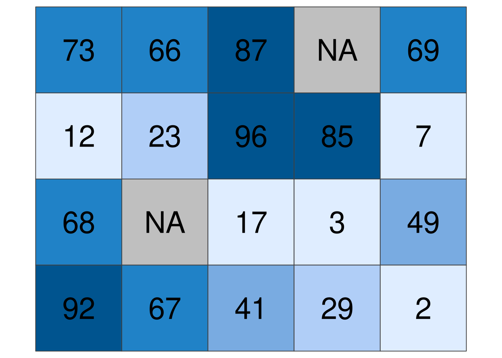

When we think about raster data, most of the time we are referring to regular grids (Figure 2.3). In regular grids, each cell has the same, constant size, and coordinates change from top to bottom and from left to right1. Regular rasters can be transformed into rotated and sheared rasters (Figure 2.3). Rotated grids are the result of transforming both coordinated, \(x\) and \(y\) using the same rotation coefficients. Sheared grids are created when the rotation coefficients are not equal. Rectilinear grids, on the other hand, have orthogonal axes, but consist of rectangular cells with different sizes and shapes (Figure 2.3). In the last type of raster data grids, curvilinear grids, cells are cuboids of different sizes and shapes (Figure 2.3).
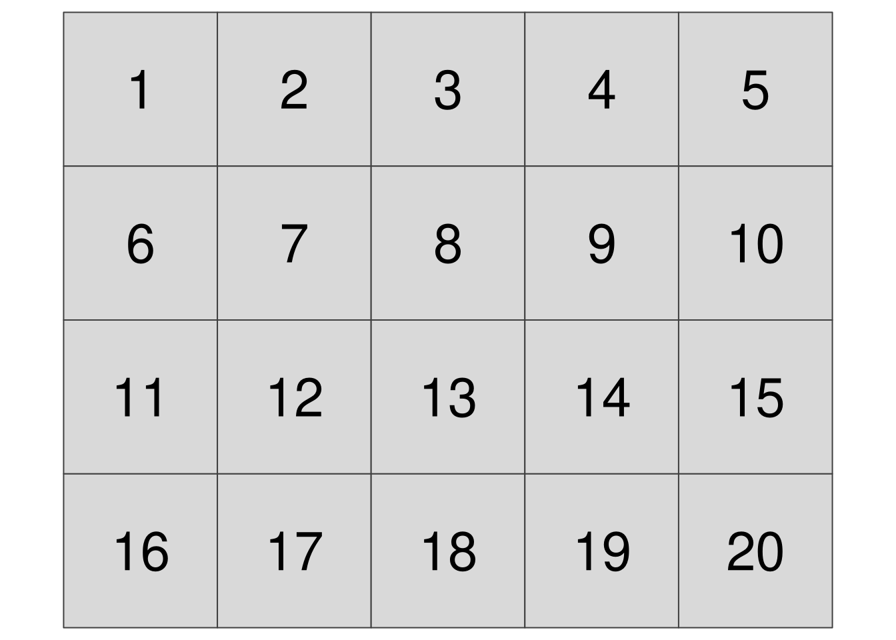
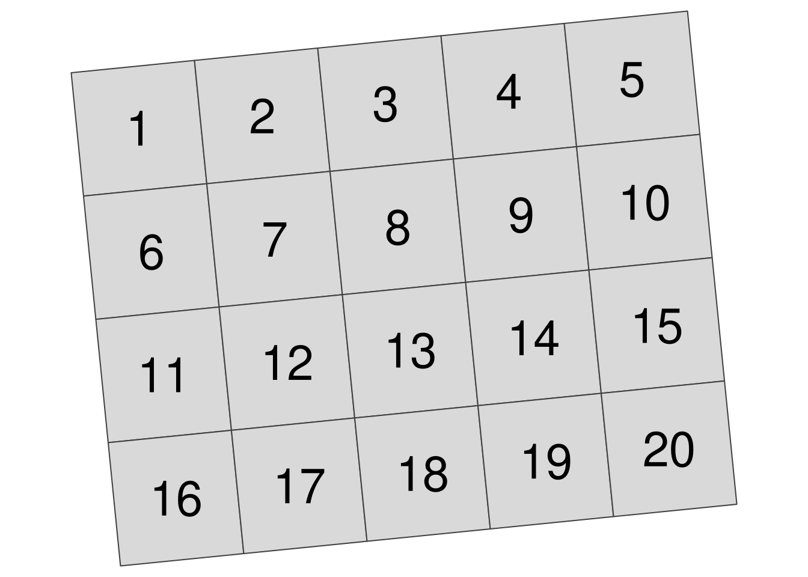
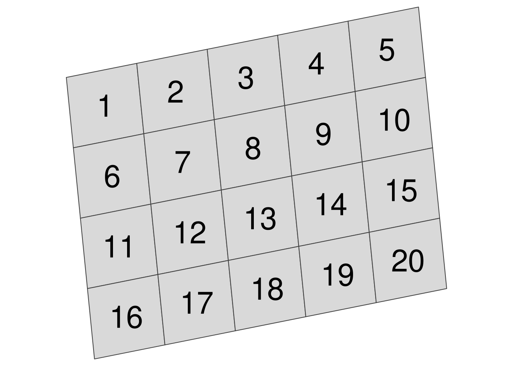
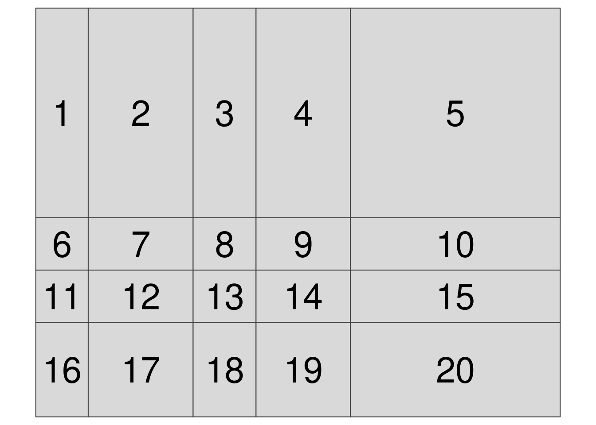
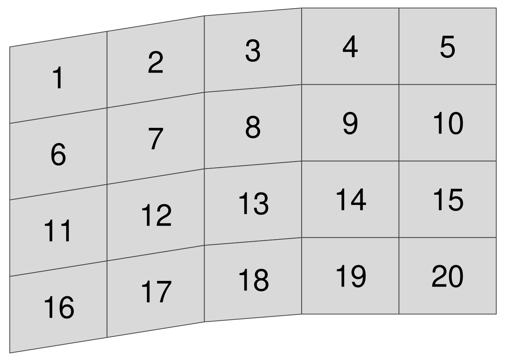
Contrary to spatial vector data, a basic raster data stores just one attribute. It is, however, possible to stack together many single rasters (also known as raster layers). This allows us to store and operate on many rasters having the same dimensions at the same time. Examples of multi-layer rasters include satellite imageries or temporal rasters. Satellite imageries usually consist of many bands (layers) for different wavelengths. The most basic bands, representing the colors red, green, and blue, can be connected together to create one composite image with true colors (Figure 2.4). Temporal rasters store one attribute, but for many moments in time. Additional information about multi-layer rasters can be also found in Section 2.2.3.
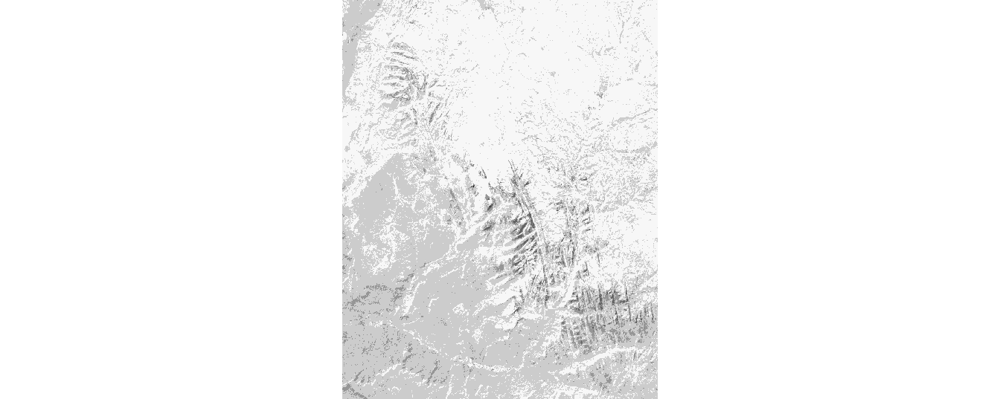
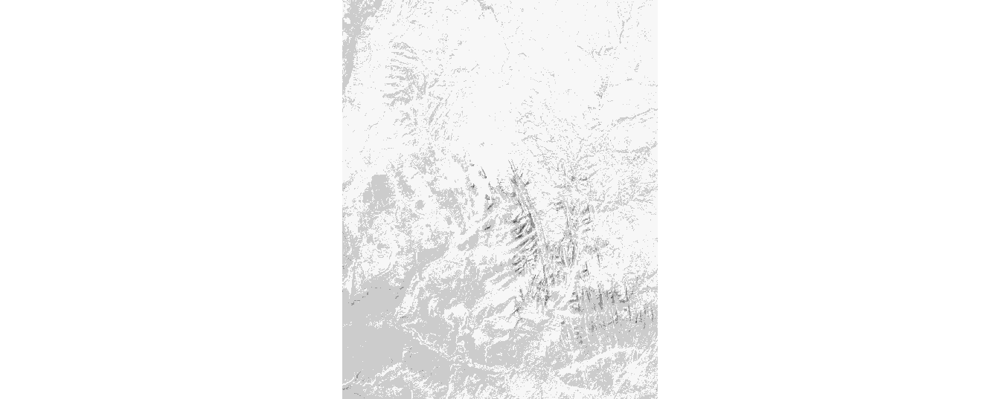
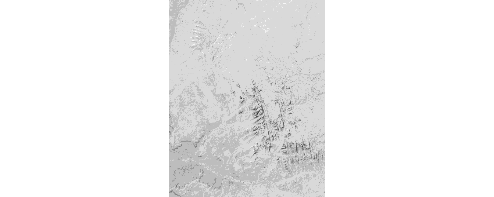

Similarly to vector data, a large number of raster file formats exists. Currently, the GeoTIFF format (.tif or .tiff) is one of the most popular spatial raster formats. It is an extended image TIF format that stores spatial metadata (e.g., map projection) along the values. Another popular spatial raster formats include Arc ASCII (.asc) and ERDAS Imagine (.img).
2.2.3 Spatial data cubes
Traditionally, spatial vector and raster data models refer to a unique set of locations. For example, each feature in a polygon dataset and each cell in a raster dataset refer to one specific area. However, to solve real-life problems, we need to store and operate on more complex data structures. It includes situations when we have many attributes, often for several moments in time.
Storing multiple attributes is not a problem for the vector data model, when an attribute table can have many columns. The question is how to extend the spatial vector data model to include measurements for many times. For example, let’s consider a polygon data with many attributes representing shares of land-use types for several years (Figure 2.5). One approach would be to create a separate column for each variable in each year. Alternatively, we can have one column representing the year and one column for each attribute, however, this approach would require multiplying each geometry as many times as we have time stamps. The third approach involves separating geometries from attributes, and where attributes for each moment are stored independently. The last idea is used in spatial vector data cubes (Section 2.3.3). An example of the spatial vector data cubes idea can be seen in Figure 2.5. It consists of two elements: a geometry (MULTIPOLYGON) of provinces of the Netherlands and an array connected to it that stores shares of land-use types for several years.
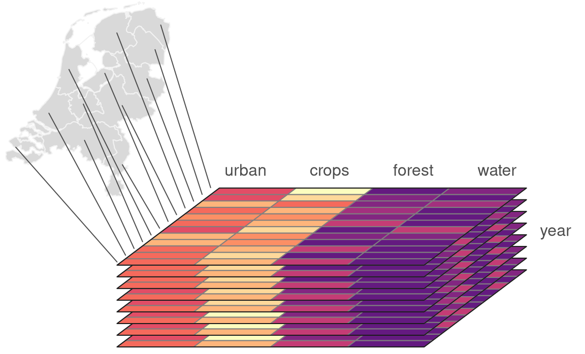
A single raster dataset can store just one variable for a given area. To store several attributes, we can connect rasters representing different attributes for the same extent, creating multi-layer rasters (Section 2.2.2). Additionally, each of the aforementioned rasters can be collected for many moments in time, adding other layers to the data. The question here is how to efficiently store multi-layer raster data to understand what layers relate to which attribute and time. Similarly to spatial vector data cubes, we can think of separating spatial dimensions from non-spatial attributes and create spatial raster data cubes (Section 2.3.3). Figure 2.6 gives an example of a raster data cube. It consists of several single-layer rasters with the same spatial properties, such as resolution, extent, and CRS. These rasters are organized to store four-dimensions of the data: latitude, longitude, time, and attributes. It has values of three attributes for five moments in time in total.
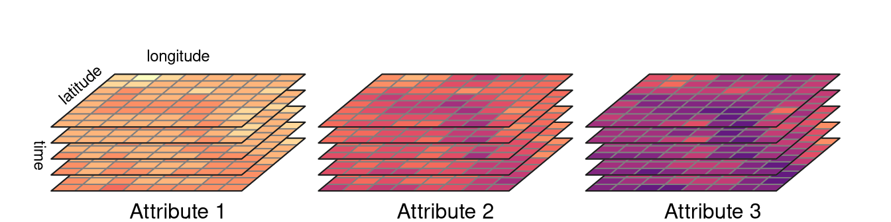
Spatial data cubes are suitable for many real-life applications. For example, time-series of climate measurements for several stations, demographic data on a country level gathered for many years, or satellite imageries over some period of time.
One way to create spatial data cubes is by connecting many independent vector or raster objects. Second way is to read a spatial data cube from one of the file formats allowing for storing complex data. It includes formats such as NetCDF (.nc) and HDF (.hdf).
2.3 Spatial data representations in R
R has several packages aimed to represent spatial vector data. For more than a decade, the sp package was a standard of vector data representation in R. However, now this package is in the maintenance mode only, and its successor, sf is recommended. The tmap package has been using sf since version 2.0.
Several R packages can be used to represent spatial raster data, including raster and its successor terra. The raster package was used as a backbone of raster data visualization until tmap version 3.0. Nowadays, the stars package is used by tmap to operate on raster data and spatial data cubes.
In the two next sections, we introduce the sf package (Section 2.3.1) and the stars package (Section 2.3.3).
2.3.1 The sf package
The sf package implements ideas behind the Simple Feature standard, which describe how to represent spatial vector data. Its main class, sf, has the form of an extended data frame, where each row is a spatial feature. In it, attributes of the vector data are stored as columns. It also has one additional column, most often named geom or geometry2. This column contains geometries in a form of well-known text (WKT), storing all of the coordinates.
The sf package can read all of the spatial data formats mentioned in Section 2.2.1 using the read_sf() function3.
The new object, worldvector, has a sf class. It has 185 features (rows or geometries) and 15 fields (columns with attributes). There is also an 16th column, geom, that stores geometries of each feature. Objects of class sf also display a header containing spatial metadata. It includes geometry type, dimension (XY, XYZ, XYM, XYZM), bounding box (bbox), and information about the used Coordinate Reference System (CRS).
worldvectorSimple feature collection with 185 features and 15 fields
Geometry type: MULTIPOLYGON
Dimension: XY
Bounding box: xmin: -16331900 ymin: -8392908 xmax: 16886150 ymax: 8315884
Projected CRS: WGS 84 / Equal Earth Greenwich
# A tibble: 185 × 16
GEO name wb_region wb_income_region population CO2_emissions gdp_per_cap
<chr> <chr> <chr> <chr> <dbl> <dbl> <dbl>
1 AUS Austra… East Asi… High income 42900000 15.3 56800
2 AZE Azerba… Europe &… Upper middle in… 9190000 3.94 5770
3 BIH Bosnia… Europe &… Upper middle in… 1640000 6.38 6030
4 BGD Bangla… South As… Lower middle in… 151000000 0.474 1200
5 BEL Belgium Europe &… High income 12500000 8.32 47200
6 BFA Burkin… Sub-Saha… Low income 83200000 0.162 712
7 BGR Bulgar… Europe &… Upper middle in… 3590000 5.85 8650
8 BDI Burundi Sub-Saha… Low income 50900000 0.0447 211
9 BEN Benin Sub-Saha… Low income 47200000 0.614 897
10 BRN Brunei East Asi… High income 390000 22.2 31400
# ℹ 175 more rows
# ℹ 9 more variables: life_expectancy <dbl>, corruption_perception_index <dbl>,
# democracy_score <dbl>, hdi <dbl>, energy_use_per_cap <dbl>,
# literacy_rate <dbl>, demo_corr <dbl>, demo_corr_rank <int>,
# geom <MULTIPOLYGON [m]>The worldvector object has MULTIPOLYGON geometry type, where each feature (row) can consist of one or more polygons. Each polygon’s vertices are represented by a pair of values (dimension: XY). Bounding box allows to quickly understand the spatial extension of the input data. Finally, it has projected CRS named WGS 84 / Equal Earth Greenwich. You can learn more about Coordinate Reference Systems in ?sec-crs.
Spatial vector data of class sf can be also obtained using some of other R data packages. For example, rnaturalearth allows to download world map data, osmdata imports OpenStreetMap data as sf objects, and tigris loads TIGER/Line data.
The tmap package accepts spatial vector data objects from both sf and sp packages. In case of having vector objects in a different representation, they should be converted into sf objects first, before making maps. The sf package has the st_as_sf() function that translates objects of many classes, including Spatial (from the sp package), ppp, psp, and lpp (from the spatstat package), to the objects of class sf. The st_as_sf() function also allows to turn data frames into sf objects - the user needs to provide the input data frame, names of columns with coordinates, and additionally definition of the CRS of the data. For example my_sf = st_as_sf(my_df, coords = c("Xcolumn", "Ycolumn"), crs = "EPSG:4326").
If you want to learn more about operating on sf objects, we recommend visiting the package website and vignettes at https://r-spatial.github.io/sf/ and reading the Geocomputation with R book (Lovelace, Nowosad, and Muenchow 2025).
2.3.2 The terra package
2.3.3 The stars package
The stars package allows for reading and processing raster data in R. This package also has support for both spatial vector and raster data cubes. Its main class, stars, is built as a list of matrices or arrays with metadata describing their dimensions. The stars package is also well integrated with sf, with many st_ functions (such as st_crs()) working also on stars objects.
The read_stars() function allow to read spatial raster data from a file4. This function requires at least one argument with a filename to be read.
library(stars)
worldelevation = read_stars("data/worldelevation.tif")The new object, worldelevation, is of a stars class. It has two dimensions, x and y, and one attribute worldelevation.tif.
worldelevationstars object with 2 dimensions and 1 attribute
attribute(s):
Min. 1st Qu. Median Mean 3rd Qu. Max. NA's
worldelevation.tif -412 218 608 1139.982 1941 6410 389580
dimension(s):
from to offset delta refsys point x/y
x 1 1080 -180 0.3333 WGS 84 FALSE [x]
y 1 540 90 -0.3333 WGS 84 FALSE [y]The worldelevation.tif attribute is a matrix, where each cell represents an elevation value. The x dimension has 1080 elements (columns), starting from a coordinate (offset) of a cell boundary of -180. Next, the coordinates of further cells increase by 0.333333 (delta) - resolution in the x dimension. The y dimension has 540 elements (rows), starting from a coordinate (offset) of a cell boundary of 90. For the y dimension, each further cell’s coordinated decreases by 0.333333 (notice the negative value of delta) - resolution in the y dimension. Both dimensions also have the same CRS - WGS 84.
read_stars() also has several additional arguments including RasterIO, which gives control over the input data extent and resolution. For example, the below code will read just the first and second bands (results not shown).
file_path3 = system.file("raster/landsat.tif", package = "spDataLarge")
x3 = read_stars(file_path3, RasterIO = list(bands = c(1, 2)))Internally, a stars object is a list of matrix or array objects with additional attributes describing spatial metadata, such as a number of columns and rows, resolution, coordinate reference system, etc. All of this information is read from the input file.
Stars objects are constructed by dimensions and attributes. Dimensions relate to what kind of objects are stored as list elements. For example, when it is a matrix then we just have two dimensions representing columns and rows. However, it is also possible to store multidimensional arrays, which allow having many additional dimensions for bands, times, etc. Attributes, on the other hand, are stored as list elements. Each attribute can relate, for example to a different variable.
Reading a simple GeoTIFF file would result in having just two dimensions and one attribute (a matrix). On the other hand, reading complex raster file formats, such as NetCDF could result in having more than two dimensions (e.g. time) and many attributes (e.g., an array with temperature, precipitation, humidity).
Before reading the file, the stars package checks if the input data is a curvilinear grid and what is the number of cells in the data. When the input data is small or curvilinear then the full data is read in computer memory. Otherwise, a stars proxy approach is used, where only metadata is read including pointers to where the complete data is. When we want to plot large raster data, then it is read at a lower resolution than the native one.
The stars package also has support for vector data cubes, where each geometry is just stored once (as a dimension), and each attribute is a matrix or an array with the number of rows equals to the number of geometries, the number of columns equals to another dimension (e.g., time), and possibly the number of array layers equals for additional dimensions.
More information on how the stars objects are organized and how to operate on them can be found in the stars package vignettes at https://r-spatial.github.io/stars.
Regular grids can also have coordinated changing in different directions, e.g., from bottom to top.↩︎
However, any other names are also possible.↩︎
It is also possible to read spatial vector data using the
st_read()function, which differs fromread_sf()by having different default arguments.↩︎The stars package also has a function
read_ncdf()aimed at improved reading of NetCDF files.↩︎